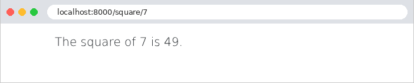

7. O ciclo de vida de uma requisição
Entre a chegada de uma requisição e o envio de sua resposta, o kernel do [Symfony] (a classe [HttpKernel]) executa várias etapas e, em cada uma delas, publica um evento ao qual a aplicação pode reagir por meio de um listener. Já encontramos vários deles: os listeners de [kernel.request] e [kernel.response] (exemplos 03, 16, 22), de [kernel.exception] (exemplos 08 e 12) e os argument resolvers (exemplo 12). Este capítulo reúne todos eles em um único exemplo, que exibe uma mensagem no console a cada etapa para que você observe a ordem:
- 1 e 2. [kernel.request]: a requisição acabou de chegar. Todos os listeners desse evento são chamados, em ordem decrescente de prioridade. Um deles é o listener de roteamento do [Symfony] (o listener [RouterListener], com prioridade 32): ele procura a rota que corresponde à URL e ao método e armazena seu nome e seus parâmetros nos atributos da requisição; se nenhuma corresponder, lança uma exceção [NotFoundHttpException] (404). Um listener com prioridade superior a 32 (1) é executado antes do roteamento e não conhece a rota; um listener com prioridade inferior (2) a conhece. Um listener de [kernel.request] também pode fornecer ele próprio a resposta ([$event->setResponse(...)]): nesse caso, a ação não é chamada;
- 3. [kernel.controller]: a ação foi selecionada, mas ainda não invocada. Um listener pode examinar a ação (seus atributos, como os do [PHP], por exemplo) ou substituí-la;
- 4. Os argument resolvers calculam os parâmetros da ação (Exemplo 12), e então o evento [kernel.controller_arguments] é publicado;
- 5. A ação e a view que ela gera. (Se a ação não devolver um objeto [Response], um evento adicional, [kernel.view], permite que um listener construa a resposta a partir do que a ação devolveu.);
- 6 e 7. [kernel.response]: a resposta está pronta. Cada listener pode modificá-la (adicionar um cabeçalho, um cookie), em ordem decrescente de prioridade;
- 8. [kernel.terminate], publicado depois que a resposta é enviada ao navegador (é a chamada [$kernel->terminate(...)] do arquivo [public/index.php], exemplo 01). Os listeners não podem mais alterar a resposta: servem para tarefas que podem esperar (gravar um log, enviar um e-mail etc.), sem fazer o usuário esperar;
- x. [kernel.exception]: uma exceção lançada em qualquer etapa (por um listener, um resolver, a ação ou a view) interrompe o processamento; ela é tratada pelos listeners desse evento. O primeiro listener que fornecer uma resposta encerra a busca. Essa resposta passa então por [kernel.response], como uma resposta comum. Se nenhum listener da aplicação fornecer uma, o [Symfony] gera a página de erro: detalhada no modo de depuração, mínima nos demais casos.
Isso equivale aos filtros do [Java] e aos interceptors do [Spring MVC], aos filtros de ação do [ASP.NET Core MVC], às funções [before_request] / [after_request] do [Flask] e ao middleware do [Laravel]. A diferença entre eles está em sua estrutura: um componente de middleware envolve o restante do processamento (ele chama [$next] e, assim, vê a requisição antes e a resposta depois, dentro do mesmo código), ao passo que um listener reage a um evento; para agir antes e depois da ação, é preciso escutar dois eventos. Por outro lado, um listener pode intervir em uma etapa específica (depois do roteamento, depois da seleção da ação etc.), e a ordem dos listeners é determinada por um número: a prioridade.
7.1. Exemplo 24: As etapas do processamento de uma requisição
A aplicação tem apenas uma ação, que calcula o quadrado de um inteiro: [/square/7]. Dependendo da URL, ela tem sucesso ou falha de várias maneiras. As mensagens são escritas no console do servidor pela função [error_log] do [PHP], que o servidor de desenvolvimento ([php -S]) exibe.
7.1.1. Antes e depois de tudo: src/EventListener/Logger.php
Uma única classe pode escutar vários eventos: o atributo [#[AsEventListener]] é então aplicado a cada um dos métodos pertinentes.
- linhas 16–23: mensagem nº 1, com a requisição ([getRequestUri()]: o caminho e os parâmetros). A prioridade 100 coloca o listener antes do roteamento: nada aconteceu ainda no [Symfony];
- Linhas 26–30: mensagem nº 7, depois que tudo o mais foi concluído. Uma prioridade de -100 coloca o listener depois dos da aplicação e dos do [Symfony] (a maioria dos quais tem prioridade entre -10 e 10). [getStatusCode()] é o código da resposta.
Um listener assim não conhece a rota escolhida, já que o roteamento ainda não ocorreu. Ele serve para processamentos que se aplicam a todas as requisições: registro de logs, tratamento de um proxy (o estudo de caso menciona isso a propósito do endereço IP dos clientes)...
7.1.2. Depois do roteamento: src/EventListener/Block.php
- linha 13: a prioridade padrão, 0: o listener é chamado depois do roteamento;
- linha 20: mensagem nº 2. O roteamento armazenou o nome da rota selecionada no atributo [_route] da requisição (e seus parâmetros nos atributos de mesmo nome, exemplo 12);
- Linhas 21–24: o parâmetro [?block] da URL ([has] verifica sua presença) provoca um erro 403 (Forbidden, acesso negado): a exceção [AccessDeniedHttpException] encerra o processamento.
7.1.3. Antes da ação: src/EventListener/Timed.php e Timing.php
Queremos medir o tempo apenas de certas ações, as que precisam disso. Basta marcá-las com um atributo personalizado, [PHP]:
Um atributo é uma classe comum, ela própria marcada com o atributo [#[Attribute]]; [Attribute::TARGET_METHOD] indica que ele se aplica a um método. Esse atributo não carrega nenhuma informação: sua mera presença é o que importa.
- Linhas 17–28: o evento [kernel.controller]. O método [getAttributes] do evento devolve os atributos [PHP] de uma determinada classe presentes na ação (e em sua classe): uma lista vazia significa que a ação não está marcada, e o listener não faz nada. Caso contrário, mensagem nº 3, e o horário de início, armazenado nos atributos da requisição (exemplo 12). [hrtime(true)] é um relógio preciso, em nanossegundos, projetado para medir durações;
- linhas 30–36: mensagem nº 6, sobre [kernel.response], com o código da resposta, se a medição tiver começado. A prioridade padrão, 0, coloca esse listener antes do [Logger] (-100);
- linhas 40–49: o evento [kernel.terminate], publicado depois que a resposta é enviada: mensagem nº 8, contendo o tempo decorrido desde a mensagem nº 3. A verificação da linha 45 confirma que a medição começou: o evento é publicado para todas as requisições, mesmo as que não chegaram à ação.
É assim que o [Symfony] próprio implementa alguns de seus atributos: [#[IsGranted]], que veremos no próximo capítulo, é lido por um listener de [kernel.controller_arguments], que nega o acesso à ação se o usuário não tiver a permissão exigida.
7.1.4. Os argumentos da ação: src/Binding/IntegerResolver.php e o controller
Um argument resolver (Exemplo 12), que escreve a mensagem nº 4. Ele aceita qualquer texto e o converte em um inteiro ou em [null] se não for um ([filter_var] devolve [false]): diferentemente de uma restrição como [requirements] (Exemplo 02), que devolveria uma página 404 para [/square/abc]; aqui, é a ação que determinará o resultado.
- linha 20: a ação é marcada com nosso atributo [#[Timed]];
- linha 21: o parâmetro [$n] é fornecido por nosso resolver (atributo [#[ValueResolver]], exemplo 12);
- linhas 24–26: um parâmetro que não é um inteiro: erro 400 (Bad Request), causado pela exceção [BadRequestHttpException];
- linhas 27–29: o número 13 provoca um erro “inesperado”. [DomainException] é uma classe de exceção da biblioteca padrão do [PHP];
- linha 30: o caso normal. A view [calc/result.html.twig] simplesmente exibe o resultado.
7.1.5. Tratamento de erros: src/EventListener/ErrorPage.php
- linhas 15–17: o listener de [kernel.exception], com prioridade -10. O [Symfony] registra dois listeners para esse evento: o primeiro, com prioridade 0, registra a exceção no log; o segundo, com prioridade -128, gera a página de erro do [Symfony]. O nosso fica entre os dois: a exceção é registrada no log e, em seguida, exibimos nossa página;
- linha 21: o listener não é um controller e não tem o método [render] de [AbstractController]: ele recebe o próprio engine do [Twig] (a classe [Twig\Environment]), cujo método [render] devolve a página renderizada como uma string;
- linhas 28–32: todos os erros HTTP: uma URL sem rota (404), um método negado (405) e as exceções [AccessDeniedHttpException] (403) e [BadRequestHttpException] (400)... implementam a interface [HttpExceptionInterface] e carregam seu código ([getStatusCode()]). Esse único teste substitui, portanto, todas as páginas de erro do [Symfony] pelas nossas;
- linhas 33–36: uma exceção da classe [DomainException] (ou de suas subclasses; veja o Exemplo 08): um erro “inesperado”, convertido em uma página de erro “personalizada”, com código de status 500 (Internal Server Error). A mensagem da exceção é exibida no console, mas não na página: ela pode conter detalhes internos que não interessam ao usuário;
- linhas 37–39: as demais exceções são tratadas pelo [Symfony];
- linhas 42–43: [setResponse] fornece a resposta, que substitui a exceção e interrompe a propagação do evento: os listeners seguintes (a página de erro do [Symfony]) não são chamados.
A página de erro recebe o código de erro e exibe uma mensagem apropriada:
- Linha 8: um array associativo definido na view ([{key: value, ...}]), do qual se obtém o elemento com índice [code]; o operador [??] fornece um valor padrão quando esse elemento não existe.
Há outra maneira, ainda mais simples, de substituir as páginas de erro sem escrever um listener: uma view chamada [templates/bundles/TwigBundle/Exception/error404.html.twig] substitui a página de erro 404, e o mesmo vale para cada código ([error.html.twig] para todos os demais). Essas views só são usadas em produção; o modo de depuração mantém suas páginas detalhadas (você pode visualizá-las no modo de depuração em [/_error/404], desde que tenha importado as rotas [@FrameworkBundle/Resources/config/routing/errors.php]). Um listener, por outro lado, permite qualquer tipo de tratamento (uma resposta em JSON, um redirecionamento etc.) em todos os modos.
7.1.6. Execução
Caso normal, [/square/7]:

O console do servidor exibe as oito etapas em ordem (as datas que o [php -S] coloca no início das linhas foram removidas):
A linha [[info]] vem do roteamento do [Symfony]: é o seu log (log). Sem uma biblioteca de logging (a mais usada é o [Monolog], instalado por [composer require logger]), o [Symfony] usa um log mínimo, que escreve no console. A última linha é o log do servidor de desenvolvimento, escrito quando a requisição termina. Um acesso bloqueado, [/square/7?block]:

O listener [Block] lançou uma exceção: a ação não foi selecionada, seus argumentos não foram calculados e ela não foi chamada. A exceção foi registrada no log pelo [Symfony] e depois convertida em uma resposta por nosso listener; essa resposta passou por [kernel.response]. O evento [kernel.terminate] foi publicado, mas [Timing] não exibiu nada, pois a medição não havia começado. Um parâmetro que não é um inteiro, [/square/abc]:

Desta vez, a ação foi chamada com [null] (que é renderizado como uma string vazia: [square()]), e foi essa ação que lançou o erro 400. Um erro “inesperado”, [/square/13]:

A exceção foi tratada por nosso listener: o usuário vê a página de erro “personalizada”, e não a página detalhada, embora o modo de depuração esteja ativo. Ela foi registrada no log mesmo assim, com o nível [critical] (um erro HTTP é simplesmente um [error]): como o [Laravel], o [Symfony] distingue entre registrar no log uma exceção e a resposta que ela gera. Por fim, uma URL que não corresponde a nenhuma rota, [/unknown]:
O roteamento falhou: nenhum listener depois dele, nenhuma ação. A página 404 é a nossa:
Vamos ao essencial. Os listeners de eventos do kernel são o lugar certo para as verificações comuns a muitas ações (o usuário está logado? Ele tem permissão para acessar esta ação?): eles formam a base do componente de segurança do [Symfony], que o próximo capítulo usa para a autenticação. Os listeners do evento [kernel.exception] e as views de erro garantem que o usuário nunca veja uma página técnica, seja qual for o erro: o estudo de caso tira proveito disso.